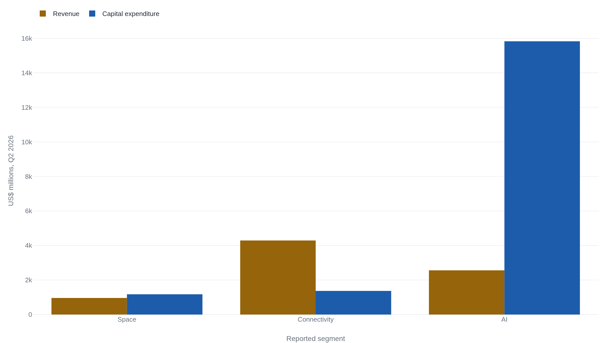

Most of SpaceX's $1.75 trillion price rests on the AI unit it bought in February
SpaceX's first quarterly report as a public company shows Starlink earning the revenue and the AI unit spending 86% of the capital without a profit to show, so the documented business alone cannot carry the price.
The first 10-Q settles what SpaceX is
SpaceX sold shares to the public in June 2026. On August 4 it filed its first quarterly report as a public company, a 10-Q, the last step in the ordinary sequence a new issuer completes after its registration statement, prospectus, and listing form.1 For a company that spent two decades private and famously opaque, the filing does something new. It reports, under the accounting standard that governs how a public company breaks out its parts, three reportable segments: Space, Connectivity, and AI.2 A segment, in that standard, is a piece of the company whose results management tracks on its own. The split into three is the first time an outsider can see which part of SpaceX earns money and which part spends it.
The market prices the combined company, its share price times its shares outstanding, at a market capitalization near $1.75 trillion.3 The same quarter carried an operating loss of $143 million and a net loss of $541 million.24 A price that large on a company losing money is a claim about the future, and the three segments are where that claim can be read. The question the price poses: of the $1.75 trillion, how much can the segment that earns money account for, and what must be true of the rest?
Starlink earns; the AI unit spends
Start with where the money comes in. Connectivity is Starlink, the worldwide low-latency broadband network run from thousands of satellites.2 It booked $4,291 million of the quarter's $7,814 million in revenue, the largest of the three segments, split between $2,485 million from consumers and $1,806 million from enterprise and government customers.4 It reached 12.0 million subscribers by the end of the quarter, and it grew fast: a year earlier the same segment brought in $2,588 million, so its revenue rose about two-thirds in twelve months.4
Space is the rockets. Launch services and vehicle development brought in $962 million, launch itself $648 million of that, on 38 launches in the quarter.4 Space is also where Starship lives. The filing gives Starship no revenue, research, or capital line of its own, so its spending and its prospects sit blended inside the Space segment and cannot be pulled out.2 The company flew Starship twice in the period, Flight 12 in May and Flight 13 in July, the latter deploying 20 of its newest satellites.4 Those are engineering facts, not a business the filing lets anyone size.
AI is the newest of the three and the reason the quarter looks the way it does. The segment runs Grok, a frontier language model, the X platform, and orbital and data-center compute.2 It earned $2,561 million, most of it from what the company calls AI solutions and infrastructure.4 The segment reached its present shape in February 2026, when SpaceX combined with xAI in an all-stock deal that valued SpaceX at $1 trillion and xAI at $250 billion.5 xAI became a wholly owned subsidiary, and its language model and platform became SpaceX's AI segment.
Revenue is only half the picture. The other half is where the capital goes, and it goes somewhere else entirely.

Capital expenditure, the cash a company sinks into satellites, factories, launch sites, and data centers, ran to $18,369 million for the quarter.4 Of that, $15,828 million went to the AI segment, against $1,367 million for Connectivity and $1,174 million for all of Space.4 The segment that earns the most revenue is not the segment that spends the most capital. Connectivity brings in the money; AI, at 86% of the quarter's capital spending, consumes it. That inversion, revenue in one segment and capital in another, is the fact the valuation has to price.
The company as a whole lost money on a GAAP basis, the $143 million operating loss and $541 million net loss already noted.24 Yet the same release headlines an adjusted EBITDA of $3.5 billion, up from $1.2 billion a year earlier.4 EBITDA is earnings before interest, taxes, and the non-cash charges for depreciation and amortization; the adjusted version strips out more still, including stock-based pay. The distance between a $3.5 billion adjusted profit and a $541 million reported loss is depreciation on the buildout, stock compensation, and the cost of financing all that capital. Which of the two numbers a reader trusts decides much of what the company is worth.
Fifty-plus times a quarter, annualized
How big is $1.75 trillion against a business this size? Two numbers set it, the share price and the share count, and the second is contested. The 10-Q's cover lists 13,181,779,945 shares outstanding, 7.70 billion Class A and 5.49 billion Class B.2 At the early-August price near $133, that basic count gives a market capitalization around $1.75 trillion, and outlets report figures of $1.75 to $1.8 trillion.3 Counting the shares that options and convertible securities could later create, a fully diluted count, raises the figure: the research firm Sacra puts the diluted market cap near $2.3 trillion.6 Basic shares exist today; diluted shares are ones that could come into being. The honest denominator is a range, roughly $1.75 trillion to $2.3 trillion.
The price itself has not run away since the listing. SpaceX priced its IPO at $135.00 a share, opened at $150 and closed its first day at $160.95,78 and by early August traded near $133, at or just below the offer price and well under that first-day close.3 The market has not re-rated the company upward since it listed. It set this price at the offer and has held near it.
Set that price against the business the filing documents. There is one public quarter, so the crudest way to scale it is to carry the quarter forward: multiply each segment's revenue by four. The result is a run-rate, a snapshot of the current pace rather than a forecast, and because revenue grew 92% over the year the run-rate almost certainly understates a business still climbing.4 Even so it fixes the order of magnitude. Connectivity runs at about $17 billion a year, AI at about $10 billion, Space at about $4 billion, and the whole company at about $31 billion.
A market capitalization of $1.75 to $2.3 trillion on $31 billion of annualized revenue is a price of between about 56 and 74 times revenue, depending on the share count. A profitable, slow-growing company is commonly priced at a few times its yearly revenue, and a fast-growing one at ten or twenty. A price of fifty to seventy times a run-rate is not paying for this year's business. It is paying for a much larger business the buyer expects to exist later. The decomposition is a way of asking which segment that larger business is supposed to come from.
Splitting $1.75 trillion across three segments
Two independent anchors bound the split. The first is the market's own recent marks on the pieces. Before the IPO the parts of this company were priced separately. Sacra records an insider sale in December 2025 that valued SpaceX, which did not yet hold xAI, at about $800 billion.6 Two months later the xAI combination valued SpaceX at $1 trillion and xAI at $250 billion, a combined $1.25 trillion.5 The public market now prices the combined company near $1.75 trillion.3 The February mark already contains xAI, so the step from $1.25 trillion in February to about $1.75 trillion in August is close to a like-for-like comparison. That is roughly half a trillion dollars added in six months, over a quarter that reported a loss.
| Date | What was priced | Mark |
|---|---|---|
| Dec 2025 | SpaceX, before it held xAI (insider sale, estimate) | ~$800B6 |
| Feb 2026 | SpaceX plus xAI ($1.00T + $0.25T, all-stock combination) | ~$1.25T5 |
| Aug 2026 | Combined company, public market | ~$1.75–1.8T3 |
The second anchor works from the profitable business up. Connectivity is the one segment with a claim to operating profit: Sacra, whose figures are independent estimates and not the company's, reports that Starlink is the only segment earning an operating profit.6 The filing discloses revenue by segment, but the record does not confirm it breaks out profit by segment, so that profitability cannot be checked against the 10-Q itself.2 Take Connectivity's run-rate of about $17 billion and price it generously, the way a fast-growing, profitable subscriber business is priced. Pick the multiple yourself: ten times revenue gives about $170 billion, twenty times about $340 billion. Even the high end is between a tenth and a fifth of a $1.75 trillion price. Space, at under $4 billion of run-rate and carrying a Starship the filing will not let anyone value, cannot close the distance.
Whatever number you put on the profitable business, most of the price is left over.
What is left over rests on two things the filing cannot price. One is the AI segment, marked at $250 billion in February and now carried inside a company priced half a trillion dollars higher, still without a quarter of profit to its name.5 The other is Starship, an engineering program with no revenue line, whose value is whatever a reader is willing to assume. Putting a number on the AI segment or on Starship does not make either one more certain. The decomposition does not shrink that uncertainty. It shows how much of the price is riding on it.
| Segment | Run-rate | What the price needs it to become |
|---|---|---|
| Connectivity | ~$17B | Hold its subscriber lead and keep growing at high margin as Kuiper scales. |
| AI | ~$10B | Turn $15.8B a quarter of buildout and heavy cash burn into durable earnings. |
| Space | ~$4B | Make Starship a business the filing cannot yet size. |
What could break the Connectivity anchor
The whole decomposition leans on one business actually being worth what the operating case assumes: Connectivity. Three things bear on whether it is.
The first is competition. Starlink is far ahead, but it is no longer alone. Amazon's Kuiper constellation had about 329 production satellites across roughly a dozen missions by mid-2026 and had not yet opened consumer service, against a federal requirement to deploy 1,618 satellites, half the constellation, by July 30, 2026.9 Amazon agreed in April 2026 to buy Globalstar for spectrum and the ability to connect directly to phones.9 A well-funded competitor scaling toward direct-to-device is the pressure that would slow Connectivity's growth or thin its margins, the two things the operating case needs it to hold.
The second is the AI segment's appetite for cash. Independent reporting puts xAI's burn near $1 billion a month, and the segment's $15.8 billion of quarterly capital spending is a buildout, not a one-time bill.5 SpaceX can fund it for now. The balance sheet shows $93.5 billion in cash and equivalents, about $100 billion including marketable securities, though the first half of the year already sent $34.5 billion out the door in investing.24 The cash is real. The question the price cannot yet answer is what the AI buildout earns.
The third is supply. The shares insiders hold began to come unlocked this month.
The first lock-up tranche expired on August 6, 2026, releasing up to about 911.5 million insider shares, up to the first 20% of eligible holdings, against a public float reported below about 280.1 million shares.10 One outlet sized the release near $123 billion at then-current prices.11 These figures come from coverage that attributes them to the IPO prospectus; the prospectus body itself could not be read for this account. Reporting also describes an early-release trigger if the stock trades 30% above the $135 offer price, above about $175.50, and a staggered schedule running to a final expiry on December 8, 2026, with founder shares locked longer.10
An unlock several times the size of the existing float is stock the market has to absorb, and it arrives with the price already near its offer level and below its first-day close.3 Whether that pressure lasts, the operating question underneath it does not change.
Most of the price rests on the segment with no profit record
Put the pieces back together. The profitable business the filing documents, Connectivity, can account for something like a tenth to a fifth of the market's price. Space, rockets and an unpriced Starship, adds a modest amount on its revenue and an unknown amount on hope. Everything else, the majority of $1.75 trillion or more, rests on the AI segment: a unit with no quarter of profit, marked at $250 billion in February, consuming 86% of the company's capital.45 A buyer at today's price is mostly buying that.
The reader who wants to weigh the price should look past the rockets. The launch business is small and the Starship program is unmeasurable from the outside. The number that decides whether $1.75 trillion is defensible is whether Grok, the X platform, and a satellite-and-data-center compute buildout can earn a return on $15.8 billion a quarter. That is a question about an AI company, asked of a company most people think of as a rocket company.
At today's price, most of SpaceX's value is a claim on the unprofitable AI segment and on Starship optionality, not on the profitable connectivity business the filings actually document. What would change the assessment is disclosure the filing does not yet give: segment-level profit showing what Connectivity really earns, or an AI segment that begins to turn its buildout into earnings.24
Sources
- U.S. SEC EDGAR · Space Exploration Technologies Corp filing index (CIK 0001181412)
- U.S. SEC · SpaceX Form 10-Q, quarter ended June 30, 2026
- CNBC · SPCX stock quote
- U.S. SEC · SpaceX Q2 2026 earnings release (EX-99.1 to Form 8-K)
- TechJournal · SpaceX completes all-stock combination with xAI
- Sacra · SpaceX revenue, valuation and growth (independent estimates)
- U.S. SEC · SpaceX IPO pricing term sheet (free writing prospectus)
- CNBC · SpaceX (SPCX) IPO first-day trading
- CNBC · Amazon's satellite internet network
- The Motley Fool · SpaceX's lock-up expires Aug. 6
- Investing.com · SpaceX IPO lock-up expiry, ~$123B in shares to unlock